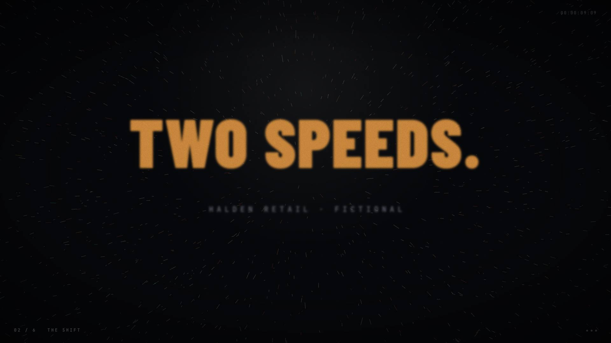
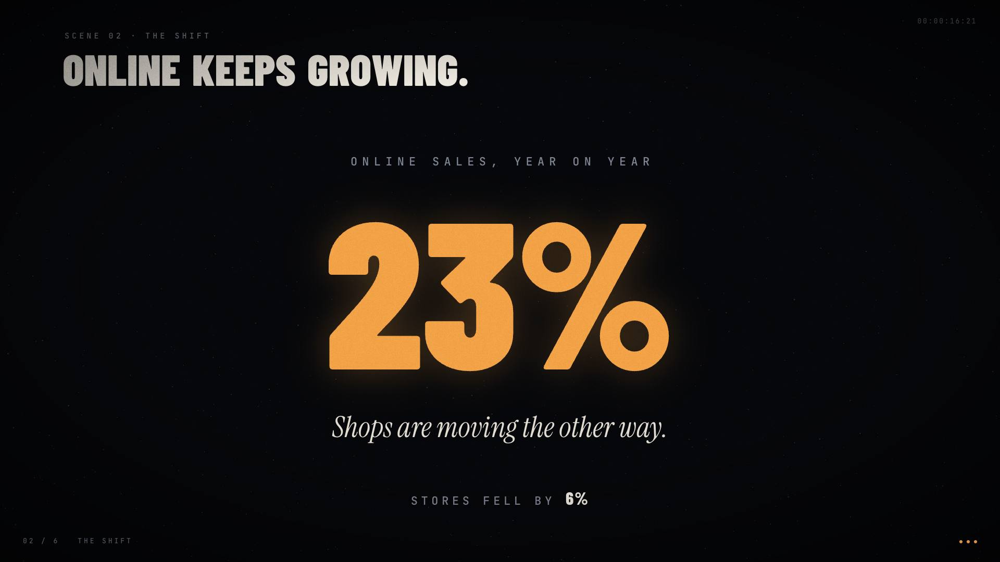
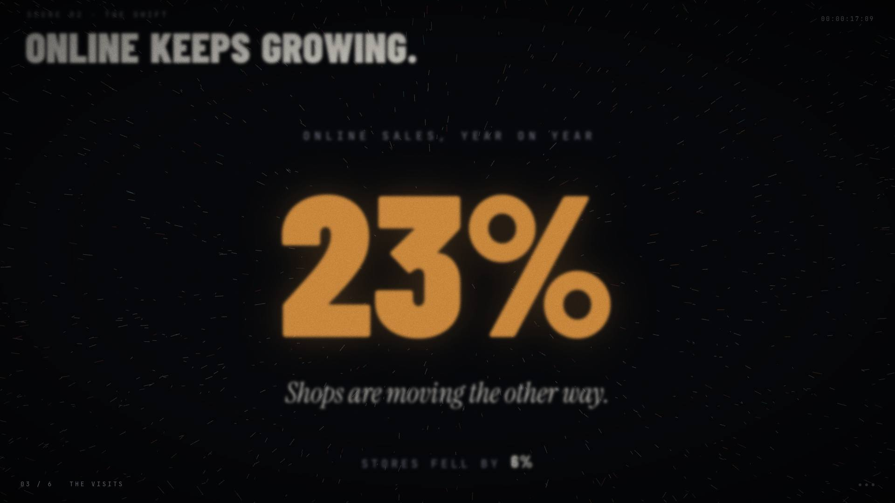
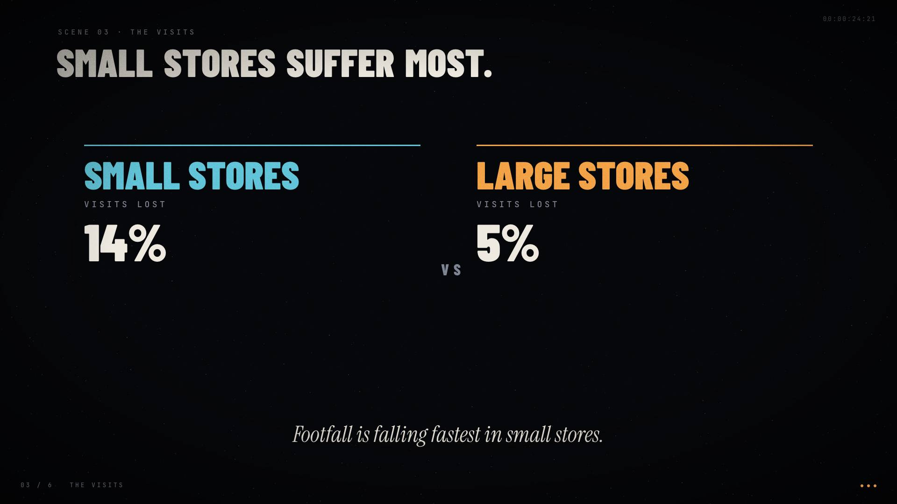
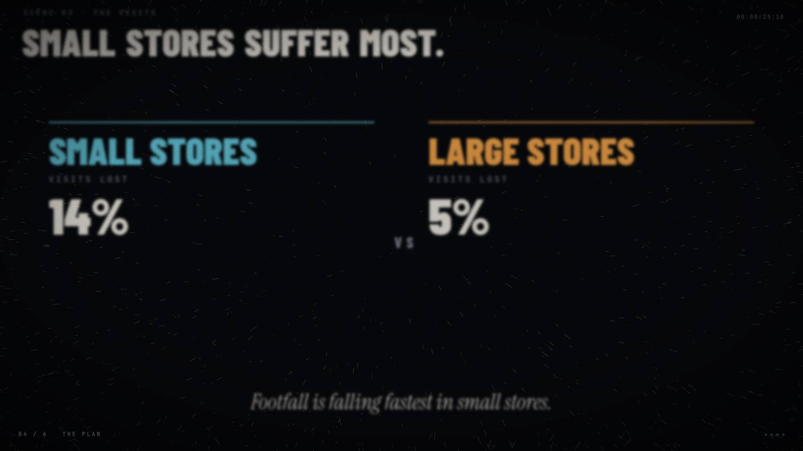
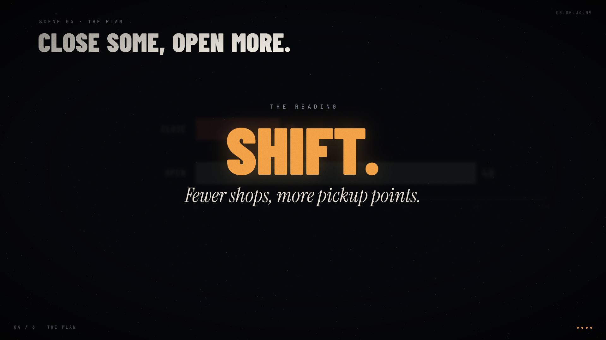
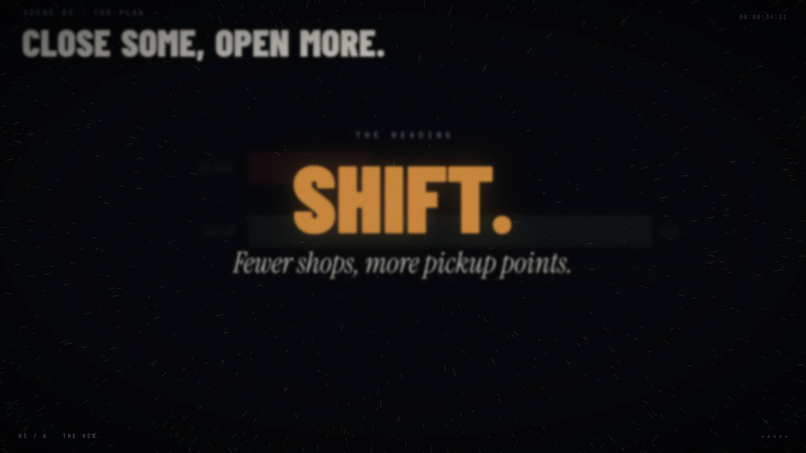
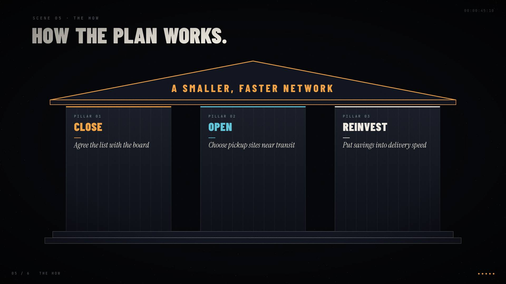
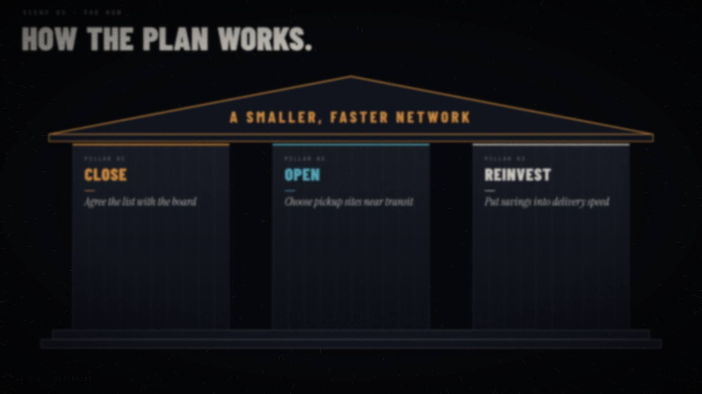
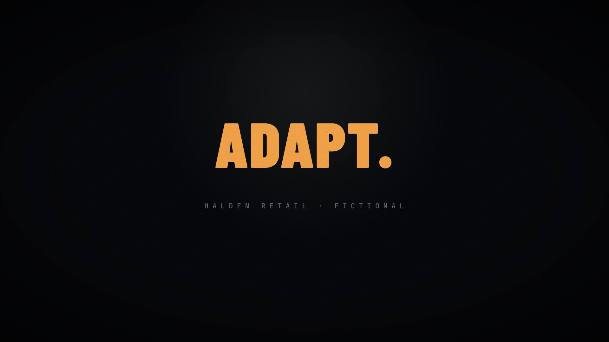

Halden adapts its shops
Narrative arc
- 1 THE STORYOpening · minimal-close · quiet
- 2 THE SHIFTOnline keeps growing. · big-number · rising
- 3 THE VISITSSmall stores suffer most. · comparison · tense
- 4 THE PLANClose some, open more. · range-bar-chart · tense
- 5 THE HOWHow the plan works. · pillars-roof · calm
- 6 THE POINTClosing · minimal-close · quiet
01 THE STORY
Opening


What the audience reads (final state)
Two speeds. · HALDEN RETAIL · FICTIONAL
Beats and speaker notes
- This is a fictional case written to test the deck.
- We look at what the document says.
- Every figure comes from the source.
Evidence behind the figures
No figures in this scene.
02 THE SHIFT
Online keeps growing. · The shift





What the audience reads (final state)
Scene 02 · The shift · Online · keeps · growing. · ONLINE SALES, YEAR ON YEAR · 23% · Shops are moving the other way. · STORES FELL BY · 6%
Beats and speaker notes
- Online sales are the bright spot.
- They grew by 23% year on year.
- Store sales fell by 6% in the same period.
Evidence behind the figures
…Store sales fell 6% while online sales grew 23%…
…Store sales fell 6% while online sales grew 23%…
03 THE VISITS
Small stores suffer most. · The visits





What the audience reads (final state)
Scene 03 · The visits · Small · stores · suffer · most. · SMALL STORES · VISITS LOST · 14% · VS · LARGE STORES · VISITS LOST · 5% · Footfall is falling fastest in small stores.
Beats and speaker notes
- Footfall fell in every store type.
- Small stores lost 14% of visits.
- Large stores lost 5%.
Evidence behind the figures
…Cost line | Share of costs | Change Rent | 38% | +4% Staff | 31% | +2% Logistics | 14% | +9%…
…- Small stores lost 14% of visits - Large stores lost 5% of visits - Customers still value local pickup…
04 THE PLAN
Close some, open more. · The plan





What the audience reads (final state)
Scene 04 · The plan · Close · some, · open · more. · THE READING · SHIFT. · Fewer shops, more pickup points.
Beats and speaker notes
- The recommendation has two parts.
- Close 12 of the weakest stores.
- Open 40 pickup points near transit.
- The network gets smaller and faster.
Evidence behind the figures
…- Close 12 of the weakest stores - Open 40 pickup points near transit - Reinvest the savings in delivery speed…
…- Close 12 of the weakest stores - Open 40 pickup points near transit - Reinvest the savings in delivery speed…
05 THE HOW
How the plan works. · The how





What the audience reads (final state)
Scene 05 · The how · How · the · plan · works. · A SMALLER, FASTER NETWORK · PILLAR 01 · CLOSE · Agree the list with the board · PILLAR 02 · OPEN · Choose pickup sites near transit · PILLAR 03 · REINVEST · Put savings into delivery speed
Beats and speaker notes
- The plan rests on three pillars.
- First, close the weakest stores.
- Second, open pickup points.
- Third, reinvest the savings.
- Together they make a smaller, faster network.
Evidence behind the figures
No figures in this scene.
06 THE POINT
Closing





What the audience reads (final state)
Adapt. · HALDEN RETAIL · FICTIONAL
Beats and speaker notes
- That is the picture the document gives.
- The details are in the source.
- Thank you. This was a fictional case.
Evidence behind the figures
No figures in this scene.